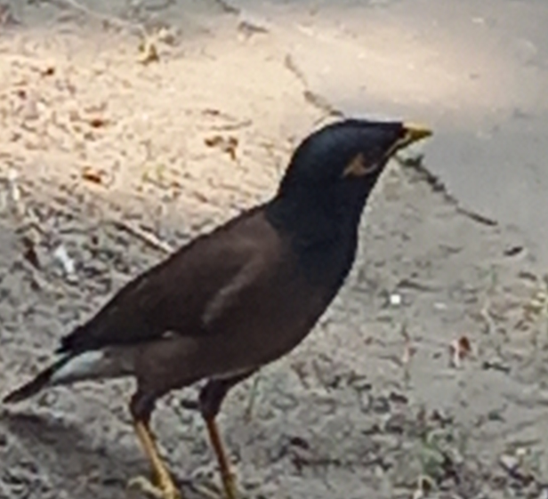

Enveloping Sieve, Majorant Property and some Examples
- Navigation
- Retour au début
- Le cours
Tout le matériel présenté ici appartient à l'auteur, c'est à dire, pour éviter de parler à la troisième personne, moi-même personnellement :) Il est disponible sous licence GPL, voir ici, ou, de façon plus générale, là. En particulier, toute utilisation non commerciale est acceptée et même accueillie à bras ouverts ! Pensez de temps à autre à me citer, cela me fera plaisir, même si je ne le sais pas :)
Le cours s'est déroulé à l'Indian Statistical Institute de Kolkata, du 24 mars au 12 avril 2022. Les notes sont encore imprécises et contiennent encore des erreurs.
Beware! These notes are not in final format and may contain errors!
The notes
Voici quelques acteurs :

|
 | |
| Drinking tea : Shanta Laishram, Satadal Ganguly, OR and Anirban Mukhopadhyay | On the Dakshineswar-Belur boat: OR, Sumit Kumar, Shanta Laishram and Kummari Mallesham |